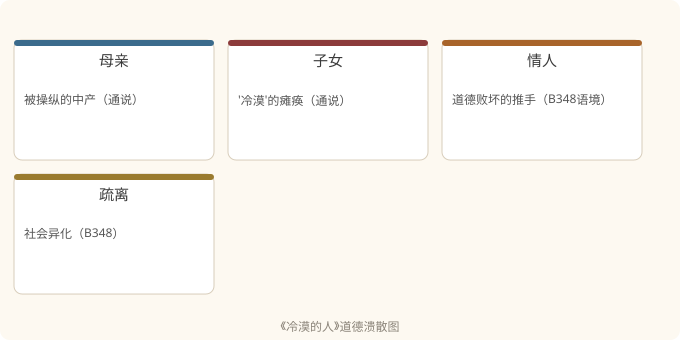

冷漠的人
一、基本信息
| 作者 | 阿尔贝托·莫拉维亚 |
|---|---|
| 成书/出版 | 1929年（Britannica B348：Gli indifferenti (1929; Time of Indifference)） Alberto Moravia — Encyclopaedia Britannica（百科全书） |
| 国别/地区 | 意大利 |
| 时代 | 现当代 · 20世纪20年代末 |
| 体裁 | 长篇小说 |
| 语言 | 意大利语 |

《冷漠的人》道德溃散图（主题·结构图）
二、创作背景
Britannica（B348）：'a scathingly realistic study of the moral corruption of a middle-class mother and two of her children'——对一个中产母亲与其两个孩子的道德败坏的辛辣现实主义研究。
Britannica（B348）：莫拉维亚——'known for his fictional portrayals of social alienation'。
题材（通说待核）：丧夫的中产母亲与情人周旋，子女的'冷漠'与家庭的溃散。
三、内容脉络
中产母亲与两个孩子：情人的操纵与家庭的道德溃散（B348：moral corruption of a middle-class mother and two of her children；情节通说待核）。
'冷漠'作为道德瘫痪的形式（通说待核）。
四、主要人物表
| 人物 | 身份 | 说明 |
|---|---|---|
| 玛利亚格拉齐亚 | 母亲 | （通说待核，B348未载） |
| 米凯莱/卡拉 | 子女 | （通说待核，B348未载） |
五、主题与艺术特点
- 社会疏离（B348：social alienation）。
- 中产的道德败坏（B348：moral corruption）。
- '冷漠'——行动能力的瘫痪（通说待核）。
六、影响与评论
- Britannica：'He was a major figure in 20th-century Italian literature.'（B348）。
Alberto Moravia — Encyclopaedia Britannica（百科全书） - Britannica：处女作即确立其现实主义路数（B348 定位）。
Alberto Moravia — Encyclopaedia Britannica（百科全书）
七、阅读建议
难点
- 法西斯前夕的意大利中产社会（时代背景通说待核）。
- '冷漠'的心理剖析。
- 《冷漠的人》中译本（人民文学/上海译文等——通说待核）。
- 意大利文原版。
莫拉维亚首选；后接《顺从者》。
八、待核实
- 玛利亚格拉齐亚/米凯莱/卡拉人名核对（B348未载）。
- 1929年出版（Alpes说）待核。
- 中译名两说（《冷漠的人》/《冷漠者们》）待核。